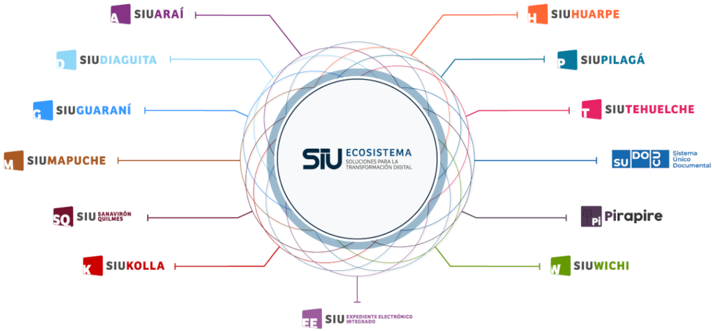

El SIU es un ecosistema de administración digital de las distintas áreas de gestión de una institución, como las administrativas financieras, académicas, de recursos humanos, de compras y patrimonio y análisis de datos, todas dedicadas a la administración de las universidades de una entidad pública.

Pero nos concentraremos en el SIU-GUARANI ya que es el que se utiliza en dicha área
El SIU-GUARANI es un módulo de gestión académica que permite registrar, de manera óptima y segura, las actividades de la gestión académica dentro de una institución desde que una persona se inscribe hasta que egresa.
Sus distintas funciones son:
- Gestión de la totalidad de la oferta educativa de la institución
- Un único acceso para personas con más de un perfil (alumno, docente, autoridad, administrativo)
- Documentación académica digital: Actas, circuito de egreso y diplomas digitalizados
- Organización por módulos relacionados a la gestión: matrícula, asistencia, cursadas, egresos
- Gestión por perfiles: de datos (información) y funcionales (sobre operaciones)
- Personalización de reportes, operaciones y módulos según necesidades de la institución